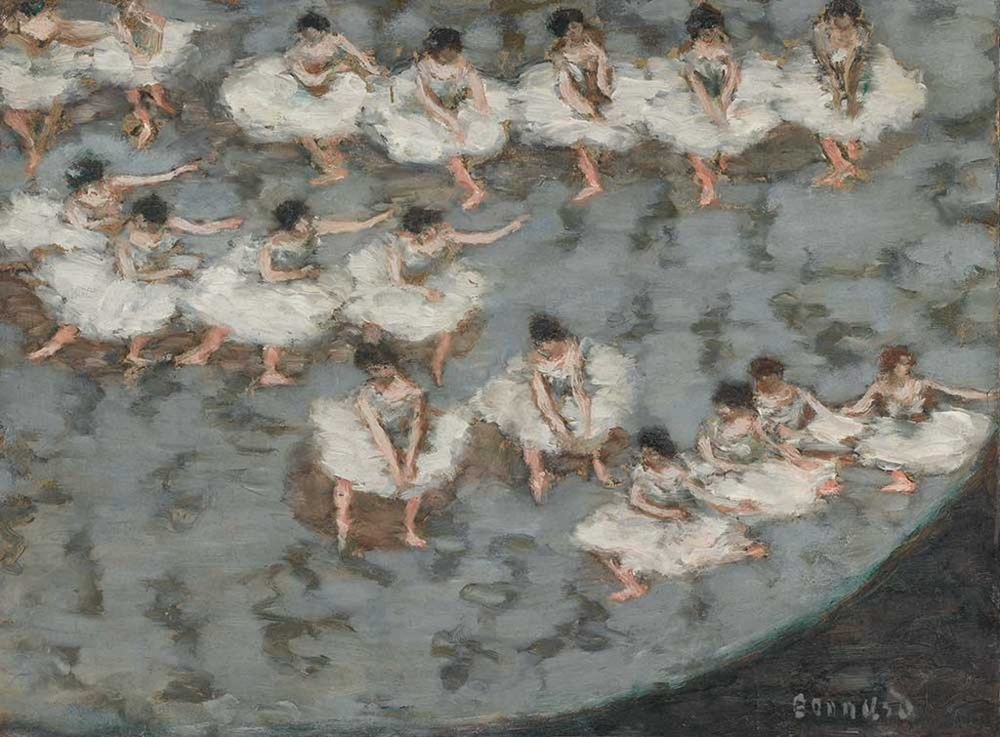

<head>
<meta charset="UTF-8" />
<meta name="keywords" content="drawing, painting" />
<meta name="description" content="drawings by Sunjy" />
<title>Sunjy</title>
<link rel="shortcut icon" type="image/x-icon" href="../../mImages/mCommon/favicon.ico" media="screen" />
<link rel="stylesheet" type="text/css" href="../../mCsses/mCommon/mCssA.css" />
<link rel="stylesheet" type="text/css" href="../../mCsses/mCommon/mCssB.css" />
<link rel="stylesheet" type="text/css" href="../../mCsses/mCommon/mCssC.css" />
<link rel="stylesheet" type="text/css" href="../../mCsses/mCommon/mCssD.css" />
<link rel="stylesheet" type="text/css" href="../../mCsses/mContent/mCssA.css" />
<link rel="stylesheet" type="text/css" href="../../mCsses/mContent/mCssB.css" />
<link rel="stylesheet" type="text/css" href="../../mCsses/mContent/mCssC.css" />
<link rel="stylesheet" type="text/css" href="../../mCsses/mContent/mCssD.css" />
</head>
<script type="text/javascript" src="../../mScripts/mContent/mContentAA.js" /></script>
<script type="text/javascript" src="../../mScripts/mContent/mContentAB.js" /></script>
<script type="text/javascript" src="../../mScripts/mContent/mContentAC.js" /></script>
<script type="text/javascript" src="../../mScripts/mContent/mContentAD.js" /></script>
<script type="text/javascript"></script> 
<script type="text/javascript">
document.write('<div class="mImgAbsolute"></div>');
/*
document.write('<p class="mFontSizeBColor" />From a white paper...</p>');
document.write('<table class="center"><tr><td>');
document.write('');
document.write('</td></tr></table>');
*/
</script>


<script type="text/javascript">
document.write('<p class="mFontSizeBColor" />Dancers</p>');
document.write('<p class="mFontSizeSColor" />Dancers by Pierre Bonnard depicts a high-angle view on a ballet with a dream-like quality. The dancers fill the stage in lines, with each group executing a different dance step.<br><br>The focus, the colors, and the cloud-like quality of the ballerina’s tulle give the impression that the figures are floating above the stage.<br><br>Rather than observe and reproduce the world around him, Bonnard sought to instill each picture with “a beauty outside nature.”<br><br>Bonnard also collaborated with the Russian and Swedish Ballet to design décors as well as a poster. Thus Bonnard may have had the opportunity to observe a ballet from a bird’s eye view.<br><br>Bonnard wrote, “Our generation always was searching for connections between art and life.”<br><br>Bonnard was interested in integrating his art into accessible forms, such as posters, journal covers and illustrations, and engravings in books.<br><br>At the beginning of his career, Bonnard designed trendy posters for a French champagne firm, which won him wide public attention.<br><br>He later produced many sets of engravings illustrating the works of the avant-garde authors of his time.<br></p>');
document.write('<table class="center" /><tr><td>');
document.write('<br>The focus, the colors, and the cloud-like quality of the ballerina’s tulle give the impression that the figures are floating above the stage.<br><br>Rather than observe and reproduce the world around him, Bonnard sought to instill each picture with “a beauty outside nature.”<br><br>Bonnard also collaborated with the Russian and Swedish Ballet to design décors as well as a poster. Thus Bonnard may have had the opportunity to observe a ballet from a bird’s eye view.<br><br>Bonnard wrote, “Our generation always was searching for connections between art and life.”<br><br>Bonnard was interested in integrating his art into accessible forms, such as posters, journal covers and illustrations, and engravings in books.<br><br>At the beginning of his career, Bonnard designed trendy posters for a French champagne firm, which won him wide public attention.<br><br>He later produced many sets of engravings illustrating the works of the avant-garde authors of his time.<br>" />');
document.write('</td></tr></table>');
</script>


